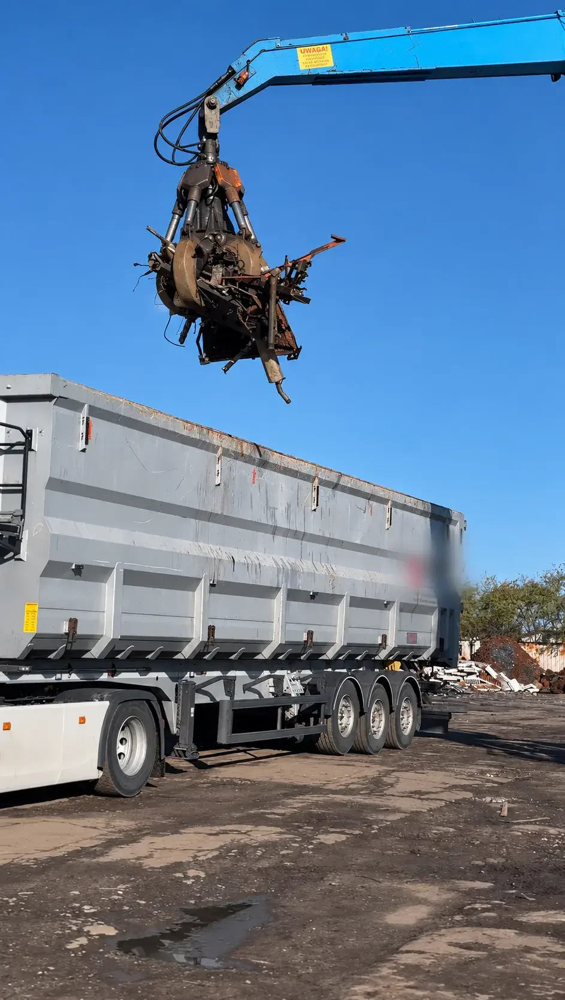
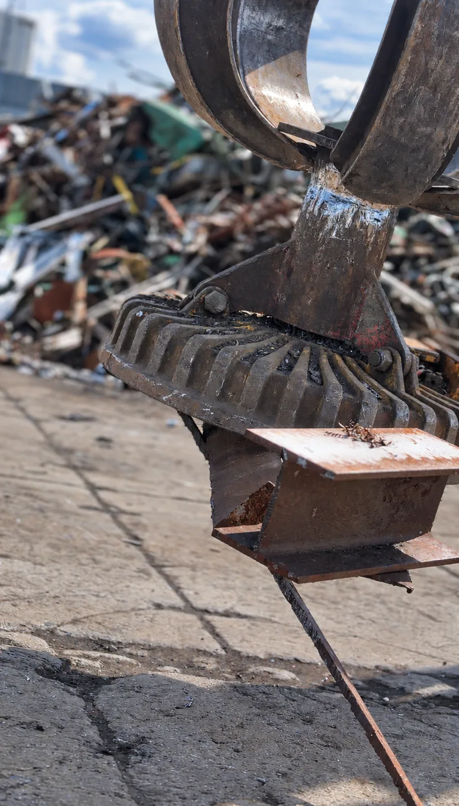

Kompleksowy demontaż konstrukcji stalowych, hal i linii produkcyjnych w Koszalinie i regionie zachodniopomorskim.
Zadzwoń terazMetzłom to firma z ponad trzydziestoletnim doświadczeniem w branży surowcowej, która od lat wspiera inwestorów, przedsiębiorstwa oraz Klientów indywidualnych z woj. zachodniopomorskiego w bezpiecznym prowadzeniu prac rozbiórkowych. Nasze rozbiórki obejmują zarówno demontaż konstrukcji stalowych, jak i kompleksową obsługę odpadów powstałych podczas prac. Dysponujemy własnym zapleczem transportowym, kontenerami oraz pojazdami HDS, dzięki czemu możemy sprawnie realizować zlecenia o różnej skali, a także stopniu trudności.

Nasza oferta wykracza poza standardowe prace budowlane, obejmując specjalistyczny demontaż infrastruktury technicznej oraz linii produkcyjnych w obiektach przemysłowych, halach i warsztatach, gdzie wymagana jest szczególna precyzja oraz dbałość o bezpieczeństwo mienia. Dzięki wykorzystaniu palników gazowych oraz specjalistycznego sprzętu tnącego sprawnie usuwamy wielkogabarytowe maszyny, kotły czy konstrukcje wsporcze, przekształcając je w pełnowartościowy surowiec wtórny.
Zadzwoń do nas już dziś i zamów bezpłatną wycenę demontażu w Twojej firmie!
Podstawiamy odpowiednie kontenery bezpośrednio na miejsce prac.
Wykorzystujemy certyfikowane wagi (samochodowe oraz mniejsze wagi precyzyjne), co gwarantuje rzetelność rozliczeń.
Wystawiamy karty przekazania odpadu (KPO) oraz inne dokumenty potwierdzające legalną utylizację.
Nasze usługi obejmują województwo zachodniopomorskie. Dzięki lokalnym oddziałom oraz własnej flocie transportowej możemy szybko reagować na potrzeby Klientów i sprawnie organizować prace w terenie:
Brak konieczności angażowania wielu podwykonawców — szybsza realizacja inwestycji i uproszczone rozliczenia.
Tak, oprócz rozbiórek konstrukcji stalowych wykonujemy specjalistyczny demontaż infrastruktury technicznej, maszyn, kotłów i linii produkcyjnych.
Nie, podstawiamy kontenery bezpośrednio na plac budowy i zapewniamy pełne zagospodarowanie odpadów metalowych jednym partnerem.
Tak, działamy zgodnie z systemem BDO i wystawiamy karty przekazania odpadu (KPO) oraz inne dokumenty potwierdzające legalną utylizację.
Podaj nam podstawowe informacje o surowcach lub usłudze, którą jesteś zainteresowany.
Przygotujemy ofertę i skontaktujemy się z Tobą.
Słupsk
ul. Grunwaldzka 3, 76-200 Słupsk